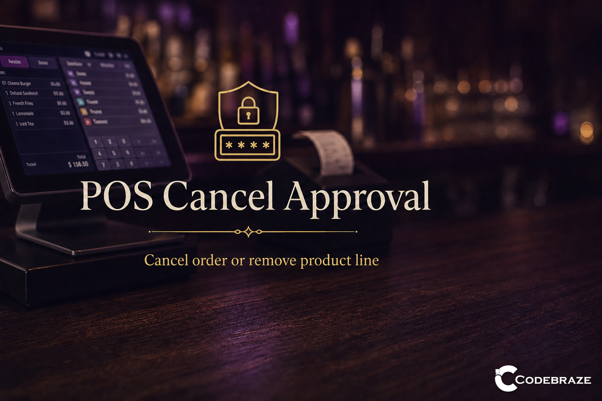
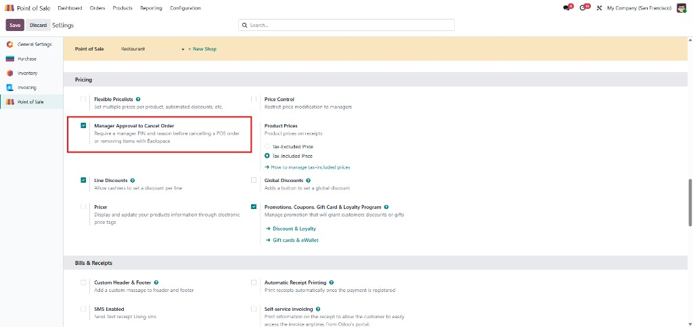
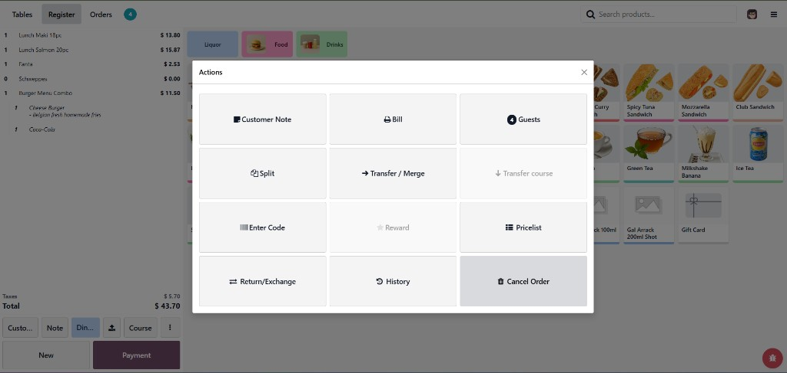
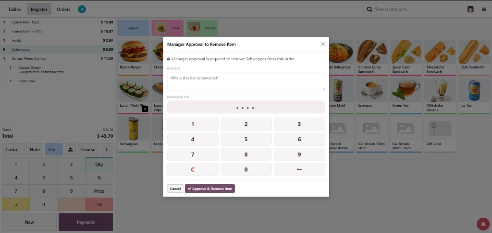

When a cashier tries to cancel a Point of Sale order that has items, or remove a product line (including via backspace), a manager must enter an approval PIN and a reason. Empty orders can still be discarded freely.

Enable Manager Approval to Cancel Order in Point of Sale settings (PIN + reason before cancel or Backspace remove).

Open Actions and tap Cancel Order — manager approval is required when the order has items.

Enter a reason and the manager PIN, then confirm with Approve & Remove Item.
Enable or disable the requirement independently for each point of sale from the POS settings.
Approvers set their own PIN on the user record. Every approval requires a written reason before the cancel or line removal proceeds.
Removing products with the backspace / delete key also triggers the same manager approval flow — not only full order cancel.
Approved cancellations and line removals are stored under Point of Sale → Orders with cashier, manager, reason, and order details.
Requires Point of Sale. Compatible with Odoo Community and Odoo Enterprise.
For support requests: sales@codebraze.com
Built for Odoo 19 · License LGPL-3 · Author CodeBraze